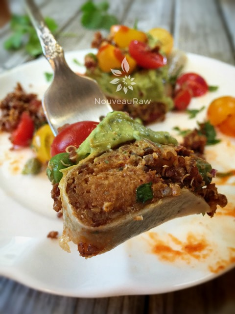

Spanish Quinoa and Refried “Bean” Burrito

~ raw, vegan, gluten-free, nut-free ~
I am a burrito fanatic, a downright burritophile (is there a support group for that?). The diversity of burritos is pretty much mind-blowing in my book. Over the years, I never met a burrito that I didn’t like unless it wasn’t mine. Truthfully, it has been years since I have had a true authentic burrito.
Anyone who knows a little bit about Mexican food will probably raise their eyebrows when they read the title of this recipe on a raw food recipe site. “A refried bean burrito?” How is this even possible?
Well, it is, and it isn’t. I don’t own a fryer, and I don’t eat beans. I turned to a unique combination of sunflower seeds, sun-dried tomatoes, and some choice seasonings to create the flavor of refried beans. If you are new to raw foods, this may seem like a far stretch, but I encourage you to give it a try… it’s amazing!
With the “bean” part all taken care of, it was time to move onto the rice. I very rarely eat rice. I opened my fridge looking for the typical ingredients used to mimic rice; cauliflower, jicama, turnips, cabbage…
I didn’t have any of those veggies on hand. But I knew that I had some red quinoa in the pantry, and that is something I can enjoy in small portions, and Bob can enjoy in hungry-man-portions. You can choose to sprout the quinoa, keeping it raw or you can cook it. Do what is right for your belly!
Instead of using flour tortillas, I used coconut wraps. You can make your own or purchase them… both being raw. I posted a link below to the ones I like if I use store-bought ones. They don’t add any coconut flavor to the dish, and after dehydrating for roughly four hours, they turn into the perfect flour-like tortilla that allows you to hold it in your hand, enjoying bite after bite, or you can eat if off a plate, and it is perfectly fork-tender.
If you look at the two photos right here, you might think that they are different burritos. It is the same burrito, that has been dehydrated for four hours. The photo up above is what it looks like inside, and the photo below is what the edge looks like.
As a taste test experiment, I had one of our Mexican friends, Adan, try it. He saw that it was in the shape of a burrito and when I asked what it tasted like, he said, “Takes just like Chorizo!” You can imagine his surprise when I told him that it was raw, and made from sunflower seeds, sun-dried tomatoes, quinoa, and spices. :) I hope I have given enough inspirational, tantalizing words to get you in the kitchen to make these burritos. I am pretty confident in saying that you won’t be sorry. Blessings and do keep me posted on what you think!
yields: 6 burritos
Spanish Quinoa: yields 4 1/4 cups
- 3 cups sprouted or cooked red quinoa
- 1/2 -1 cup fresh or frozen peas
- 1/2 cup diced tomato
- 4 Spring green onion, thinly sliced
- 3 Tbsp Sun-Dried Tomato Powder
- 2 Tbsp extra virgin olive oil
- 1 tsp maple syrup
- 1 tsp Himalayan pink salt
- 3/4 tsp Mexican chili powder
- 1/2 tsp ground cumin
- 1/4 tsp onion powder
- 1 clove garlic, crushed
Refried “Beans”: yields 3 1/4 cups
- 2 cups raw sunflower seeds, soaked
- 1 cup sun-dried tomatoes, soaked in 1 cup water
- 2 Tbsp olive oil
- 1 Tbsp paprika
- 1 Tbsp ground cumin
- 1 tsp onion powder
- 1 tsp garlic powder
- 1/2 tsp cayenne powder
- 1/2 tsp Himalayan pink salt
Coconut wraps:
- 2 cups young Thai coconut meat
- 1 1/2 cups coconut water
- 1/4 tsp Himalayan pink salt
- OR use store-bought raw coconut wraps (here)
Preparation:
Coconut wraps:
- You can purchase raw coconut wraps (here) if you are short on time or resources.
- To make homemade wraps: Place the coconut meat, water, and salt in the blender. Blend until creamy smooth; you don’t want it lumpy or gritty.
- Pour the batter onto the non-stick sheet that comes with the dehydrator. Spread it evenly across the sheet into one large square. You will cut it into quarters after it has dried.
- Dry at 115 degrees (F) for roughly 4 hours or until it is dry enough to peel off. Flip over onto the mesh sheet and dry for about 1 hour or until it isn’t tacky to touch.
- Store in a large zip-lock bag, placing parchment paper in between each piece.
Spanish Quinoa:
- Prepare the red quinoa, whether it be sprouted (raw) or cooked.
- In a large mixing bowl, combine the quinoa, peas, fresh tomato, onion, tomato powder, oil, sweetener, salt, chili powder, cumin, onion powder, and garlic. Toss until everything is well combined.
- Frozen peas are not raw typically – they’ve been blanched for a few minutes. They still contain valuable nutrients as well as good flavor and color but if you want a 100% raw recipe use fresh or they can be omitted.
- If you made sprouted quinoa and would like to warm the mixture, transfer it to a large glass baking dish and place it in the dehydrator set at no more than 115 degrees for about 2 hours or in a warmed oven (preheated to warm and turned off) for 30 minutes prior serving.
- This dish is wonderful as a side dish without being warmed. Try serving it wrapped in a large collard leaf or large leaf of romaine lettuce.
Refried “Beans”:
- Sunflower seeds – soak in 4 cups of water for 4+ hours. Rinse and drain.
- Sun-dried tomatoes – soak in 1 cup water for 30+ minutes. Drain and keep the soak water to add in later.
- After soaking the sunflower seeds and sun-dried tomatoes, drain them and place them in the food processor, fitted with the “S” blade. Process till they start to break down.
- Add to the food processor the soak water from the tomatoes, olive oil, paprika, cumin, onion powder, garlic powder, cayenne, and salt. Process until it is almost smooth but with a little texture, much like refried beans.
- Store in an airtight container in the fridge for 3-5 days.
Assembly:
- Lay a coconut wrap on the countertop, place 1/2 cup of the refried “beans” and 1/3 cup of the Spanish quinoa on one end of the wrap.
- Fold the wrap over and roll into a tube.
- Gently flatten, pressing the filling towards the edges.
- Place the burrito on the mesh sheet that comes with the dehydrator.
- Dry at 145 degrees (F) for 1 hour, then reduce to 115 degrees (F) for 6-8 hours.
- Why do I start the dehydrator at 145 degrees (F)? Click (here) to learn the reason behind this.
- The first time you make these, check on them every 30-60 minutes to see what texture you like.
- Enjoy warm!
- Store leftovers in the fridge for 5-7 days. OR wrap in freezer paper, slide into a freezer-safe ziplock bag and freeze for a month.
And Enjoy!

Keep in mind… these freeze perfectly!
© AmieSue.com